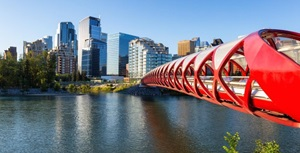
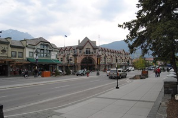
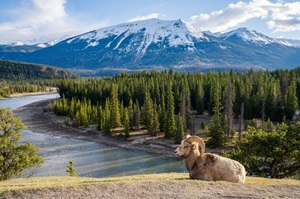
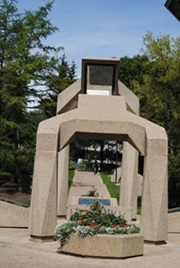
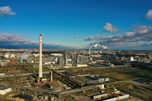
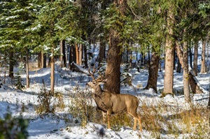
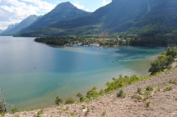

Lethbridge
Lethbridge, Alberta, is a charming southern alberta city with a rich blend of natural beauty and cultural attractions, making it an ideal destination for travelers. Lethbridge is well known for its stunning coulees, picturesque river valleys, and a backdrop of the magnificent Canadian Rockies. Lethbridge offers a diverse range of activities and attractions for visitors of all interests.
Notable places to visit include Henderson Lake Park, Nikka Yuko Japanese Garden, Fort Whoop-Up, Helen Schuler Nature Centre, Galt Museum & Archives, Indian Battle Park, Pavan Park, Nicholas Sheran Park, etc.
Calgary
Calgary, Alberta, is a dynamic and vibrant city that offers a multitude of attractions and experiences for visitors. Calgary is nestled at the foothills of the majestic Canadian Rockies. Calgary is a city that seamlessly blends urban sophistication with stunning natural surroundings. Whether you're exploring the city's history, attending a world-famous rodeo, or venturing into the nearby mountains, Calgary offers an unforgettable experience for travelers of all ages and interests. It's a place where urban excitement meets the splendor of the great outdoors.
Notable places to visit include Calgary Stampede, Heritage Park Historical Village, Calgary Zoo, Prince's Island Park, Calgary Tower, Fort Calgary, Glenbow Museum, Canada Olympic Park, The Military Museums, etc.
Banff
Banff, Alberta, is a place of enchantment, a destination where the magic of the Canadian Rockies meets the charm of a vibrant mountain town. Banff town situated within the Banff National Park, a UNESCO World Heritage site, this small resort town offers visitors a unique combination of inspiring natural beauty, outdoor adventures, and cultural experiences. Banff National Park is aplace to see wildlife at their natural habitat. Keep an eye out for elk, deer, bears, and other creatures.
Notable places to visit include Moraine Lake, Lake Minnewanka, Peyto Lake, Lake Louise, Banff Town, Johnston Creek, Banff Gondola, Bow Falls, Banff Upper Hot Springs, etc.
Jasper
Jasper is known for its stunning natural beauty, abundant wildlife, and outdoor adventures. Jasper is a haven for nature enthusiasts and explorers. Surrounded by towering peaks and glaciers, Jasper is a sanctuary for those seeking the grandeur of the Canadian Rockies. The Athabasca River provides excellent opportunities for rafting and wildlife viewing. Jasper is designated as a Dark Sky Preserve, making it one of the best places in the world for stargazing. The unpolluted skies of Jasper offer crystal-clear views of constellations, the Milky Way, and meteor showers.
Notable places to visit include Athabasca Glacier, Maligne Canyon, Jasper Town, Spirit Island, Icefields Parkway, Sunwapta Falls, Athabasca Falls, Mount Edith Cavell, Medicine Lake, Miette Hot Springs, etc.
Edmonton
Edmonton, the vibrant capital city of Alberta, situated along the North Saskatchewan River. This bustling metropolis is renowned for its diverse cultural scene, excellent dining, and a wide array of attractions. The city boasts North America's largest expanse of urban parkland, with over 160 kilometers of trails. One of the world's largest shopping and entertainment centers, the West Edmonton Mall is a shopper's must-to-go place. Elk Island national park - a short drive from Edmonton. This national park is a sanctuary for wildlife enthusiasts such as bison, elk, and a variety of bird species can be observed in their natural habitat.
Notable places to visit include West Edmonton Mall, North Saskatchewan River Valley, Elk Island National Park, Alberta Provincial Legislature, The Art Gallery of Alberta, University of Alberta Botanic Garden, Winter Outdoor activities, etc.
Fort McMurray
Fort McMurray, known as "Fort Mac," is a unique destination situated in the heart of the vast boreal forest of northeastern Alberta. This remote city serves as the gateway to the magnificent wilderness of the Athabasca Oil Sands region. Fort McMurray is the doorstep to Wood Buffalo National Park, Canada's largest national park and a UNESCO World Heritage Site. The park is home to a thriving bison population, unique salt plains. Fort McMurray is one of the best places in Alberta to witness the Northern Lights, also known as the Aurora Borealis. As the hub of Canada's oil sands industry, Fort McMurray offers guided tours that provide a unique insight into the massive industrial operations.
Notable places to visit include Oil Sands Discovery Centre, Fort McMurray Heritage Village, Points North Gallery, Vista Ridge All Seasons Park, Lifeforce Herbal Healing Centre, MacDonald Island Park, etc.
Red Deer
The city of Red Deer offers a vibrant and diverse array of attractions, making it an ideal destination for travelers. With a rich cultural scene, stunning natural landscapes, and a wide range of activities, Red Deer has something for everyone. Red Deer boasts an extensive park system, with Waskasoo Park being the crown jewel. This park encompasses more than 80 kilometers of trails, perfect for walking, cycling, or jogging. Sunnybrook Farm Museum where visitors can explore an authentic early 20th-century farm. The museum features historic buildings, interactive exhibits, and farm animals.
Notable places to visit include Bower Ponds, Discovery Canyon, Kerry Wood Nature Centre, Sunnybrook Farm Museum, Norwegian Laft Hus Society, Fort Normandeau, Great Chief Park, Heritage Ranch, Three Mile Bend, etc.
Waterton Lakes National Park
Waterton Lakes National Park is a natural wonderland that captivates visitors with its breathtaking landscapes, diverse wildlife, and a unique blend of mountain and prairie ecosystems. Hikers flock to Waterton for its extensive network of trails that cater to all skill levels. From short, family-friendly hikes to challenging backcountry adventures, there's a trail for everyone. The park's crown jewel is the deep-blue Upper Waterton Lake, surrounded by towering mountain peaks. The Prince of Wales Hotel, perched on a hill, offers panoramic views of the lake and mountains.
Notable places to visit include Red Rock Canyon, Waterton Townsite, Waterton-Glacier International Peace Park, Cameron Lake, Upper Waterton Lake, Bertha Lake, Crypt Lake Trail, Carthew-Alderson Trail, etc.